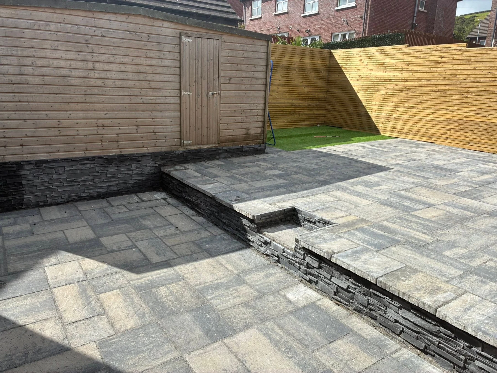

BELFAST & SURROUNDING AREAS
Real gardens.
A closer look.
Explore our paving, garden features and outdoor spaces. Open any photo to view it in full.
Belfast basedLandscapes & pavingFree quotes
OUR PROJECTS
Take in the details.
BEHIND THE FINISH
Watch us work.
A closer look at our landscaping and paving projects. Press play to see the details.
YOUR NEXT OUTDOOR PROJECT
Tell us what
you have in mind.
Landscaping and paving enquiries for Belfast and surrounding areas. Send your postcode and a few details to get started.
Prefer email? ciaransmith1985@outlook.com
Photographs of the work and access are always helpful. You can attach them to your message before sending.